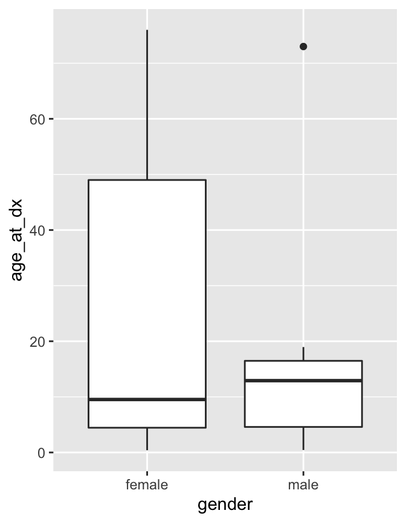
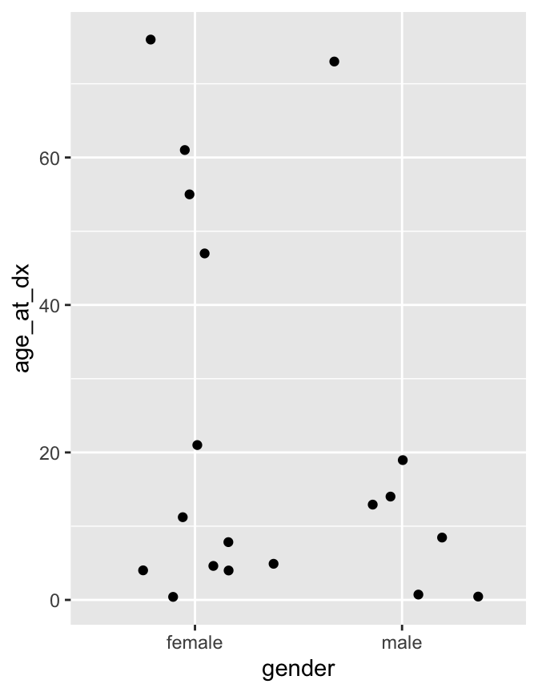

4 Summarizing data
Having loaded and thoroughly explored a data set, we are ready to distill it down to concise conclusions. At its simplest, this involves calculating summary statistics like counts, means, and standard deviations. Beyond this is the fitting of models, and hypothesis testing and confidence interval calculation. R has a huge number of packages devoted to these tasks and this is a large part of its appeal, but is beyond the scope of today.
Loading the data as before, if you have not already done so:
library(tidyverse)
sample_metadata <- read_tsv("selected_metadata.tsv")
expression_values <- read_tsv("one_gene_expression.tsv")
expression_by_disease <- left_join(expression_values, sample_metadata, by=c("sample")) 4.1 Summary functions
R has a variety of functions for summarizing a vector, including: sum, mean, min, max, median, sd.
## [1] 2.5We can use these on the expression data.
expression_in_AML <- filter(expression_by_disease, disease == "acute myeloid leukemia")
sum(expression_in_AML$age_at_dx)## [1] NA## [1] NA4.2 Missing values
Why did mean fail? The reason is that life_exp contains missing values (NA).
## [1] 61.00000 NA NA 4.60000 0.72000 4.90000 21.00000
## [8] 76.00000 NA 7.82000 0.40000 0.44000 NA 55.00000
## [15] 73.00000 12.91667 11.23000 8.46000 18.96000 47.00000 4.00000
## [22] 4.00000 14.00000R will not ignore these unless we explicitly tell it to with na.rm=TRUE.
## [1] 22.39193NA is a special value. If we try to calculate with NA, the result is NA
## [1] NAis.na can be used to detect NA values, or na.omit can be used to directly remove rows of a data frame containing them.
## [1] FALSE FALSE TRUE FALSE## [1] 22.391934.3 Grouped summaries
The summarize function in dplyr allows summary functions to be applied to data frames.
## # A tibble: 1 x 1
## mean_age_at_dx
## <dbl>
## 1 13.1So far unremarkable, but summarize comes into its own when the group_by “adjective” is used.
## # A tibble: 36 x 2
## disease mean_age_at_dx
## <chr> <dbl>
## 1 acute leukemia of ambiguous lineage 11
## 2 acute lymphoblastic leukemia 6.8
## 3 acute myeloid leukemia 22.4
## 4 adrenocortical carcinoma 12
## 5 alveolar rhabdomyosarcoma 17
## 6 atypical teratoid/rhabdoid tumor 1.4
## 7 colon adenocarcinoma 24
## 8 desmoplastic small round cell tumor 18.5
## 9 embryonal rhabdomyosarcoma 16
## 10 ependymoma 6.7
## # … with 26 more rowsgroup_by can be used to group by multiple columns, much like count. We can use this to see how the rest of the world is catching up to OECD nations in terms of life expectancy.
result <- summarize(
group_by(expression_by_disease, disease, gender),
mean_age_at_dx=mean(age_at_dx,na.rm=TRUE))
result## # A tibble: 52 x 3
## # Groups: disease [36]
## disease gender mean_age_at_dx
## <chr> <chr> <dbl>
## 1 acute leukemia of ambiguous lineage female 11
## 2 acute lymphoblastic leukemia female NaN
## 3 acute lymphoblastic leukemia male 6.8
## 4 acute myeloid leukemia female 24.7
## 5 acute myeloid leukemia male 18.4
## 6 adrenocortical carcinoma not reported 12
## 7 alveolar rhabdomyosarcoma female 17
## 8 atypical teratoid/rhabdoid tumor male 1.4
## 9 colon adenocarcinoma female 24
## 10 desmoplastic small round cell tumor male 18.5
## # … with 42 more rows4.4 t-test
We will finish this section by demonstrating a t-test. The main point of this section is to give a flavour of how statistical tests work in R, rather than the details of what a t-test does.
does age of diagnosis differ in males and females with AML?
expr_male <- filter(expression_in_AML, gender == "male")
expr_female <- filter(expression_in_AML, gender == "female")
t.test(expr_male$age_at_dx, expr_female$age_at_dx)##
## Welch Two Sample t-test
##
## data: expr_male$age_at_dx and expr_female$age_at_dx
## t = -0.52009, df = 13.552, p-value = 0.6114
## alternative hypothesis: true difference in means is not equal to 0
## 95 percent confidence interval:
## -32.81913 20.04079
## sample estimates:
## mean of x mean of y
## 18.35667 24.74583Statistical routines often have many ways to tweak the details of their operation. These are specified by further arguments to the function call, to override the default behaviour. By default, t.test performs an unpaired t-test. If this was a paired data, we could specify paired=TRUE to t.test to perform a paired sample t-test and gain some statistical power. Check this by looking at the help page with ?t.test.
When performing a statistical test, it’s good practice to visualize the data to make sure there is nothing funny going on.
## Warning: Removed 4 rows containing non-finite values (stat_boxplot).
## Warning: Removed 4 rows containing missing values (geom_point).
This is a visual confirmation of the t-test result. If there were no difference between the years then points would lie approximately evenly above and below the diagonal line, which is clearly not the case. However the outlier may warrant investigation.